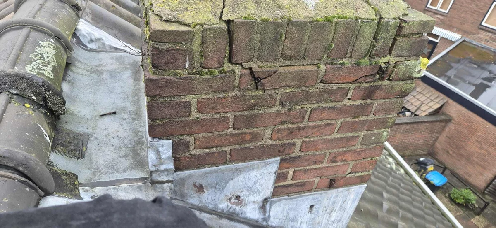
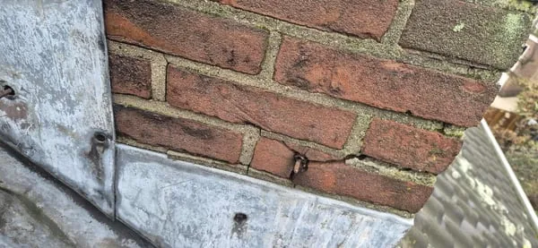
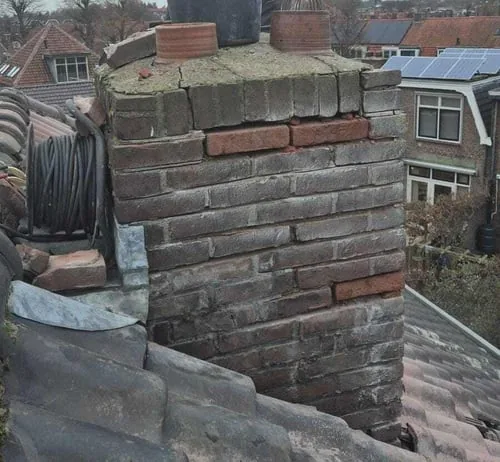

Metselwerk repareren
Metselwerk in één geheel is een stevige manier van bouwen. Maar wat te doen bij een gebarsten metselsteen? U leest het hier!
- ✓Neem contact op met onze experts om uw situatie te bekijken en ontvang een offerte en advies op maat!
- ✓Onze experts staan voor u klaar. Ontvang gratis advies of meer informatie over uw specifieke situatie!
- ✓Heldere inspectie en duidelijke uitleg vooraf

Situaties uit de praktijk
Beelden van dakdetails, slijtage of werkzaamheden die passen bij dit onderwerp.


Wat u moet weten
Als u op deze pagina terecht komt, dan kent u het wel. Een vorige bewoner heeft eens een bout in het metselwerk geplaatst of door ouderdom zijn metselstenen in uw schoorsteen of muur gebarsten. Storend, een risico op vochtdoorslag en een nog groter risico dat de scheurvorming zal doorzetten. Lees alles over het repareren van metselwerk op deze pagina, of neem direct contact op via onderstaande button!
Wanneer metselwerk repareren?
Een reparatie van metselwerk is nodig wanneer één of meerdere stenen in een muur of bouwwerk zijn gebarsten of gescheurd. Hoe eerder u erbij bent hoe kleiner de reparatie is die nodig is.
Hoe metselwerk repareren?
Het repareren van metselwerk is een specialistische klus. Desalniettemin voorkomt het dat de scheurvorming doorzet met instabiliteit en vochtdoorslag tot gevolg. Wanneer u echter tijdig actie onderneemt is het niet nodig om het gehele object of de hele muur opnieuw op te metselen.
Wij van Daklekkages Opgelost kunnen u ook van dienst zijn bij een reparatie aan metselwerk. Hierbij wordt de voeg en het metselwerk rondom de beschadigde steen geheel uitgefreesd. Wanneer het om meerdere exemplaren gaat, passen wij kleine bouwstempels toe, om verzakking en scheurvorming te voorkomen. Vervolgens wordt het beschadigde exemplaar eruit gehaald en een nieuw exemplaar ingebracht. Deze wordt middels hardhouten spalken tijdelijk voorzien van voldoende stevigheid zodat, het in de volgende stap aan te brengen metselcement voldoende tijd heeft om goed uit te harden en het bouwwerk of de muur zijn stevigheid behoud.
Kosten metselwerk repareren?
De kosten voor een reparatie aan metselwerk zijn lastig in te schatten. De plaats waar de gescheurde steen zich bevind zal erg bepalend zijn, zo ook de hoeveelheid en omvang van de opdracht. Wanneer de reparatie onderdeel uitmaakt van een grotere klus, dan kan een reparatie aan metselwerk, het vervangen van één exemplaar al vanaf €175,- exclusief btw.
Neem contact op met onze experts om uw situatie te bekijken en ontvang een offerte en advies op maat!
Advies of meer informatie nodig?
Onze experts staan voor u klaar. Ontvang gratis advies of meer informatie over uw specifieke situatie!
Wilt u zekerheid over uw dak?
Laat de situatie beoordelen voordat schade groter wordt. U krijgt helder advies over wat nodig is, wat kan wachten en welke oplossing duurzaam is.